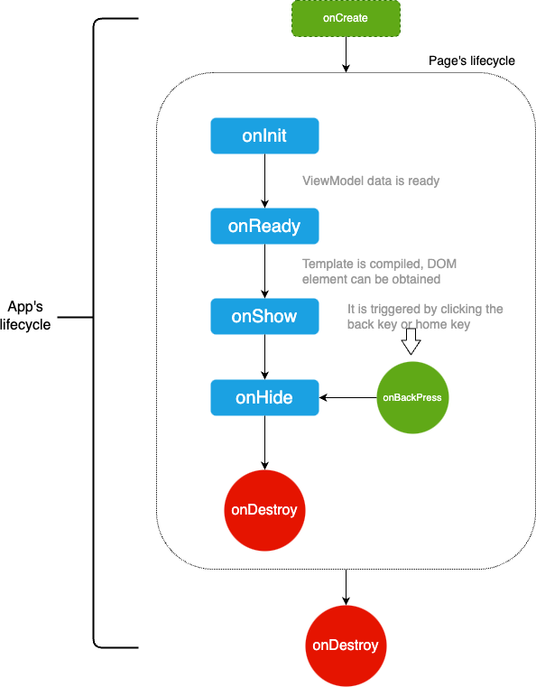

# 生命周期
- 页面的生命周期：
onInit、onReady、onShow、onHide、onDestroy、onBackPress、onRefresh、onConfigurationChanged - 页面的状态：
显示、隐藏、销毁 - APP 的生命周期：
onCreate、onShow、onHide、onDestroy、onError
# 生命周期图

# 页面的生命周期
由于页面通过ViewModel渲染，那么页面的生命周期指的也就是ViewModel的生命周期，包括常见的：onInit, onReady, onShow 在页面创建时触发调用。
# onInit()
表示ViewModel的数据已经准备好，可以开始使用页面中的数据。
示例如下：
private: {
// 生命周期的文本列表
lcList: []
},
onInit () {
this.lcList.push('onInit')
console.info(`触发：onInit`)
// 执行：获取ViewModel的lcList属性：onInit
console.info(`执行：获取ViewModel的lcList属性：${this.lcList}`)
// $app信息
console.info(`获取：manifest.json的config.data的数据：${this.$app.$data.name}`)
console.info(`获取：APP文件中的数据：${this.$app.$def.data1.name}`)
console.info(`执行：APP文件中的方法`, this.$app.$def.method1())
}
# onReady()
表示ViewModel的模板已经编译完成，可以开始获取 DOM 节点（如：this.$element(idxxx)）。
示例如下：
onReady () {
this.lcList.push('onReady')
console.info(`触发：onReady`)
}
# onShow(), onHide()
APP 中可以同时运行多个页面，但是每次只能显示其中一个页面；这点不同于纯前端开发，浏览器页面中每次只能有一个页面，当前页面打开另一个页面，上个页面就销毁了；不过和 SPA 开发有点相似，切换页面但浏览器全局 Context 是共享的。
所以页面的切换，就产生了新的事件：页面被切换隐藏时调用 onHide()，页面被切换重新显示时调用 onShow()。
示例如下：
onShow () {
this.lcList.push('onShow')
console.info(`触发：onShow`)
},
onHide () {
this.lcList.push('onHide')
console.info(`触发：onHide`)
}
# onDestroy()
页面被销毁时调用，被销毁的可能原因有：用户从当前页面返回到上一页，或者用户打开了太多的页面，框架自动销毁掉部分页面，避免占用资源。
所以，页面销毁时应该做一些释放资源的操作，如：取消接口订阅监听geolocation.unsubscribe()。
判断页面是否处于被销毁状态，可以调用 ViewModel 的 $valid 属性：true 表示存在，false 表示销毁。
示例如下：
onDestroy () {
console.info(`触发：onDestroy`)
console.info(`执行：页面要被销毁，销毁状态：${this.$valid}，应该做取消接口订阅监听的操作: geolocation.unsubscribe() `) // true，即将销毁
setTimeout(function () {
// 页面已销毁，不会执行
console.info(`执行：页面已被销毁，不会执行`)
}.bind(this), 0)
}
提示：
setTimeout之类的异步操作绑定在了当前页面上，因此当页面销毁之后异步调用不会执行。
# onBackPress()
当用户右滑返回或点击返回实体按键时触发该事件。
如果事件响应方法最后返回true表示不返回，自己处理业务逻辑（完毕后开发者自行调用 API 返回）；否则：不返回数据，或者返回其它数据，表示遵循系统逻辑：返回到上一页。
示例如下：
onBackPress () {
console.info(`触发：onBackPress`)
// true：表示自己处理；否则默认返回上一页
// return true
}
# onRefresh(query)
监听页面重新打开。
1.当页面在 manifest 中 launchMode 标识为'singleTask'时，仅会存在一个目标页面实例，用户多次打开目标页面时触发此函数。
2.打开目标页面时在 push 参数中携带 flag 'clearTask'，且页面实例已经存在时触发。该回调中参数为重新打开该页面时携带的参数，详见页面启动模式。
示例如下：
onRefresh(query) {
// launchMode 为 singleTask 时，重新打开页面时携带的参数不会自动更新到页面 this 对象上
// 需要在此处从 query 中拿到并手动更新
console.log('page refreshed!!!')
}
# onConfigurationChanged(event)
监听应用配置发生变化。当应用配置发生变化时触发，如系统语言改变。
参数
| 参数名 | 类型 | 描述 |
|---|---|---|
| event | Object | 应用配置发生变化的事件 |
event参数
| 参数名 | 类型 | 描述 |
|---|---|---|
| type | String | 应用配置发生变化的原因类型，支持的 type 值如下所示 |
event 中 type 现在支持的参数值如下
| 参数名 | 描述 |
|---|---|
| locale | 应用配置因为语言、地区变化而发生改变 |
示例如下：
onConfigurationChanged(evt) {
console.log(`触发生命周期onConfigurationChanged, 配置类型：${evt.type}`)
}
# APP的生命周期
当前为 APP 的生命周期提供了五个回调函数：onCreate()、onShow()、onHide()、onDestroy()、onError(e)。
示例如下：
export default {
// 监听应用创建,应用创建时调用
onCreate() {
console.info('Application onCreate')
},
// 监听应用返回前台,应用返回前台时调用
onShow() {
console.info('Application onShow')
},
// 监听应用退到后台,应用退到后台时调用
onHide() {
console.info('Application onHide')
},
// 监听应用销毁,应用销毁时调用
onDestroy() {
console.info('Application onDesteroy')
},
// 监听应用报错,应用捕获异常时调用,参数为Error对象。
onError(e) {
console.log('Application onError', e)
},
// 暴露给所有页面，在页面中通过：this.$app.$def.method1()访问
method1() {
console.info('这是APP的方法')
},
// 暴露给所有页面，在页面中通过：this.$app.$def.data1访问
data1: {
name: '这是APP存的数据'
}
}